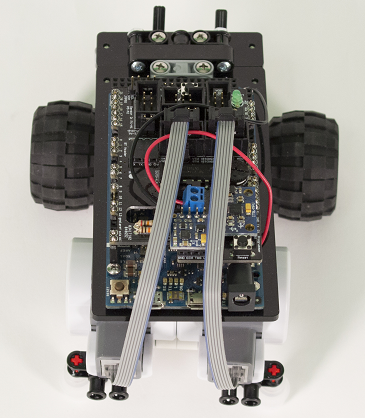
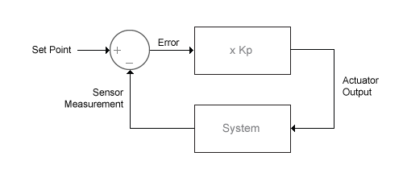

Steer Two-Wheel Robot
This example shows how to use the MATLAB® Support Package for Arduino® Hardware to steer a two-wheel Arduino-based robot with closed-loop control.
Contents
Hardware Requirements
- Arduino Due board
- MinSegShield™ Kit M2V3.2
- 9V battery pack
Hardware Setup
Assemble the hardware:
- Attach the MinSegShield M2V3.2 to Arduino Due board.
- Connect the Vcc of the battery pack to VIN port on the 2-terminal block on the MinSegShield.
- Connect the Gnd of the battery pack to GND port on the 2-terminal block on the MinSegShield.

Create Rotary Encoder Objects
Create an arduino object, and include the 'RotaryEncoder' library.
a = arduino('COM4','Due','Libraries','RotaryEncoder')
a =
arduino with properties:
Port: 'COM4'
Board: 'Due'
AvailablePins: {'D2-D53', 'A0-A11'}
Libraries: {'RotaryEncoder'}
Create rotary encoder objects for two encoders, specifying the connected output channel A and channel B pins. The quadrature encoder that comes with the kit has a resolution of 180 pulses per revolution.
channelA1 = 'A8'; channelB1 = 'D15'; channelA2 = 'D18'; channelB2 = 'D19'; encoder1 = rotaryEncoder(a,channelA1,channelB1,180) encoder2 = rotaryEncoder(a,channelA2,channelB2,180)
encoder1 =
rotaryEncoder with properties:
ChannelA: 'A8'
ChannelB: 'D15'
PulsesPerRevolution: 180
encoder2 =
rotaryEncoder with properties:
ChannelA: 'D18'
ChannelB: 'D19'
PulsesPerRevolution: 180
Turn On Motors
Each motor is controlled by a PWM pin for speed and a digital pin for direction. To turn on a motor, set the PWM voltage to above 0 and set the digital pin output to either 0 or 1 for forward or backward direction.
motor1SpeedPin = 'D2'; motor1DirectionPin = 'D5'; motor2SpeedPin = 'D6'; motor2DirectionPin = 'D8';
Start rotating both motors by applying the same PWM voltage and setting the same direction.
direction = 0;
initialPWMVoltage = 1.5;
writeDigitalPin(a,motor1DirectionPin,direction);
writeDigitalPin(a,motor2DirectionPin,direction);
writePWMVoltage(a,motor1SpeedPin,initialPWMVoltage);
writePWMVoltage(a,motor2SpeedPin,initialPWMVoltage);
% wait for the change to take effect on the hardware
pause(3);
Measure Motor Speeds
To measure one motor speed, pass in the corresponding encoder object.
rpm = readSpeed(encoder1);
fprintf('Current motor speed is: %.2f\n',rpm);
Current motor speed is: -45.83
To measure both motor speeds at the same time, pass in an array of the two encoder objects.
rpms = readSpeed([encoder1,encoder2]);
fprintf('Current motor speeds are: %.2f, %.2f\n',rpms(1),rpms(2));
Current motor speeds are: -45.83, -45.83
Steer Robot Straight
Generally, applying the same power to each wheel does not result in both motors rotating at the same speed, hence the robot does not move straight. To make it go straight, a closed-loop control algorithm is used to adjust the power applied to the two motors based on difference in their actual speeds. In this example, the proportional controller is used to help adjust the speeds. The following diagram explains the controller logic.

Define controller execution time, target speed, sampling period, and proportional gain parameter.
executionTime = 5; targetSpeed = -50; period = 0.1; Kp = 0.002;
Implement the closed-loop control algorithm to read both motor speeds and adjust one motor speed based on the difference. Make sure the shield is powered with 9V battery pack so that the motors rotate properly.
tic; while toc < executionTime rpms = readSpeed([encoder1,encoder2]); diff = rpms-targetSpeed; newPWMVoltages = initialPWMVoltage - diff*Kp; writePWMVoltage(a,motor1SpeedPin,newPWMVoltages(1)); writePWMVoltage(a,motor2SpeedPin,newPWMVoltages(2)); pause(period); end
Stop the motors by not applying power through the PWM pins.
writePWMVoltage(a,motor1SpeedPin,0); writePWMVoltage(a,motor2SpeedPin,0);
Note that the controller is running in soft real-time as it runs in MATLAB but not on the Arduino hardware. Hence, the quality of the control is affected by any other task running on your computer at the same time, such as anti-virus activities. To get hard real-time control, use the Simulink Arduino Support Package.
Clean Up
When the connection is no longer needed, clear the rotary encoder objects and arduino object.
clear encoder1 encoder2 a